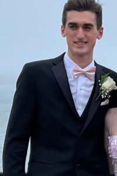
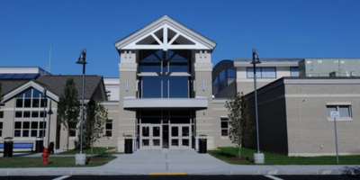
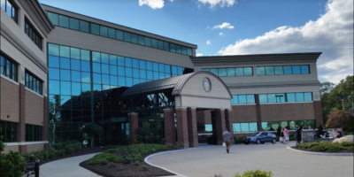
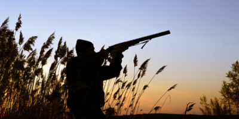

Braedin Yarletts
About Me
I’m a humble student with a deep passion for hunting and fishing, finding joy and relaxation in the great outdoors. Hands-on learning is my forte, and I also have experience in landscaping and lawn care. Soccer is another major part of my life; I’ve been playing for around four years and cherish every moment on the field. The thrill of the game and the laughs with my teammates have been incredibly rewarding, especially when we clinched the state Top 8. Balancing my diverse interests, I enjoy the blend of nature, sports, and practical skills, each contributing to a well-rounded and fulfilling life. My experiences have taught me the value of hard work, teamwork, and the joy of pursuing passions with dedication.

Schools
- Monomoy High School
- New England Tech
Attending Monomoy High School while learning the basics of Python was an experience that sparked my interest in programming. The school's supportive environment gave me an enthusiasm for coding, making complex concepts more accessible and engaging. The hands-on approach to learning Python allowed me to quickly grasp fundamental programming principles. My interactions with teachers and peers further deepened my understanding and kept me motivated. Additionally, the skills I acquired laid a strong foundation for future programming endeavors and sparked a passion for technology.
 
Hobbies
- Hunting
- Fishing
- Biking
Hunting offers me a adventure , allowing myself to go out in the natural world while honing my marksmanship. The sense of accomplishment that comes from a successful hunt is incredibly rewarding espically when its with your friends. Sharing this experience with friends enhances the enjoyment of the hunt with all the laughter and excitment we have i'm suprised we even get anything. Through our friendship we exchange tips and support each other through the highs and lows of the hunt. Additionally, these adventures provide a great opportunity to escape the stresses of daily life and bond over a common passion. Our time together in the wilderness creates lasting memories and stories that we often recount.
